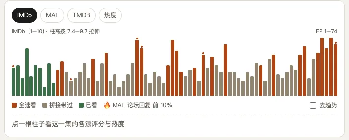
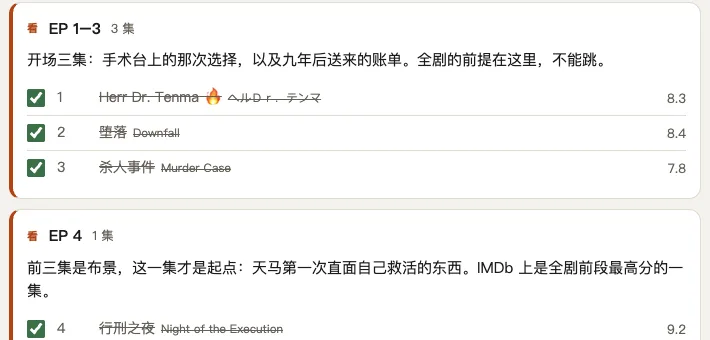
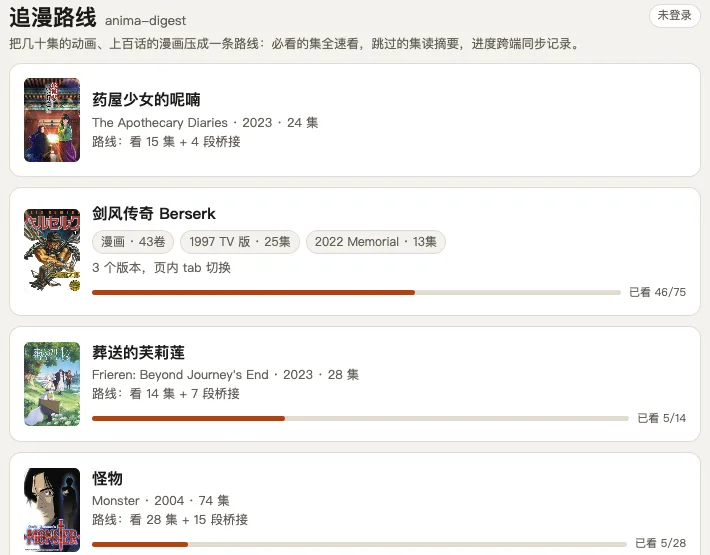

不靠"倍速"，靠选择。纯按评分取 top X% 不成立，所以评分只呈现、判断留给人。
IMDb / MAL / TMDB / Bangumi 多源评分并排呈现、互不合并；🔥 热度标记剧情爆点；「去趋势」开关扣掉"只有看完的人打后期分"的系统性上浮，中段真高分集一眼可见。

每部剧一条人工打磨的路线：哪些集是全速必看的主线骨架、哪些是高分独立短篇值得顺路看，剩下的集放心跳过——路线本身会告诉你为什么。

被跳过的集不会变成黑洞：每段跳过区间配一段几百字的桥接摘要，剧情无缝衔接。介绍页无剧透，分集手册含剧透但按进度解锁。
